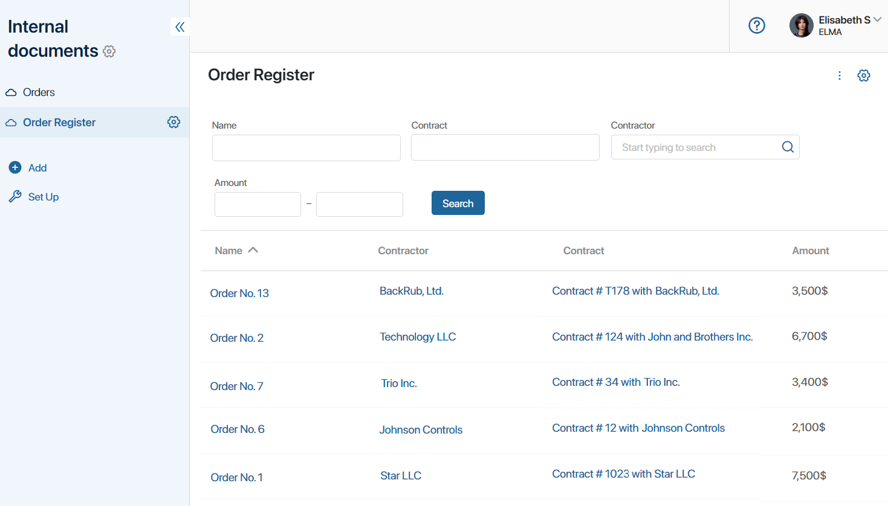
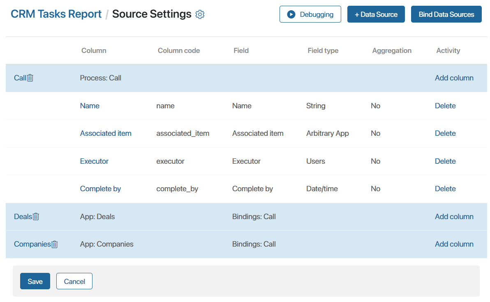

Let's consider combining different types of sources in a report, as well as using the available ways of binding them together.
Example of binding the App—App type sources
As an example, consider the Order Register report, which is built from aggregated data stored in three different apps: Orders, Contracts, and Invoices.
The apps are filled with data according to the following principle: when creating an order, a contract and a client are specified. After the agreement of the contract, an invoice is added to its page. Several invoices can be issued for one contract.
The report table displays the following data from the three apps:
- Order.
- Contractor.
- Contract for order delivery.
- Total amount of invoices under the contract.

Let's examine how to create a report and combine information from three apps.
Create a report on app data
To customize the report, follow these steps:
- Create a report named Order Register and go to the source settings.
- Click + Data Source and add three apps from different workspaces of the system: Contracts, Orders, and Invoices.
- Add columns to the table by selecting fields from the sources. To export data from the report, set the column codes so that they do not match each other:
- Orders. Name and Contractor fields.
- Contracts. Name field.
- Invoices. The Amount field with the Aggregation > Amount option. Using the aggregation option, the table will display not the value specified in the card of each invoice, but the sum of all invoices issued under one contract.
- Specify additional table settings: set the column order and the time of data refreshing in the report.
Then we need to set the conditions for selecting data from the three apps and combine them in the report table. To do this, let’s bind the sources.
Considering the context particularities of the sources, the following ways of binding can be applied:
- Common field of the same type in the Orders and Contracts sources.
- Field of the App type and Identifier property for Contracts and Invoices.
Bind sources by common fields of the same type
The report displays the corresponding contract for each order. For this purpose, in the settings, we will combine the Orders and Contracts apps.
The Company field of the App type has been added to both apps. When creating an order and a contract, the contractor is specified in this field. It is this property that will be the unifying field for binding the sources in the report.
- Make sure that the Company field of the App type has been created on the Contracts and Orders app forms. Enable the search and sort option for it in the form settings of each source.
- On the report source settings page, click Bind Data Sources.
- Fill in the data in the binding settings:
- Specify the first and second sources: Orders and Contracts apps.
- Select the field for binding: Company.
- Set the binding type: Ignore all empty cells. The table will include only those orders in which the contract and the contractor are specified.
In our example, let’s consider the result of data merging when selecting other types of binding:
- Ignore empty cells on the left. Records with a filled in binding field are selected from the first source app. In the example, the table will include only those orders in which the company is specified, as well as all contracts.
- Ignore empty cells on the right. Records with a filled in binding field are selected from the second source app. In the example, the table will include only those contracts in which the company is specified, as well as all orders.
- Full. All records from the Orders and Contracts apps will be displayed in the table.
- Save the created binding.
Bind sources by App—Identifier fields
To improve data sorting, let’s display the sum of all invoices issued under a certain contract in the Order Register report. To do this, bind the Contracts and Invoices sources using the App—Identifier binding type.
начало внимание
If on the form of source A, there is a field of the App type referring to source B, the binding can be configured by this field and the Identifier system property of source B.
конец внимание
Let’s take a closer look at how sources are combined in such settings. Each app item has a unique code. It is assigned when the item is created and is stored in the Identifier system field. When an app B record is specified in the app A item page, these items are bound together.
When generating a report, matches between the records of two sources are identified. The identifier for the app A item will be used to find the app B item specified on its page. In the report table, the related records will be displayed.
In our example, when creating an invoice, the order is selected in the App type field on its form. You can customize the binding as follows:
- For the Contract field on the Invoices app form, enable the search and sort. For the Identifier system field, the option is enabled by default.
- On the report source settings page, click the Bind Data Sources button.
- Fill in the data in the binding settings:
- Specify the first and second sources: Invoices and Contracts apps.
- Select the field for binding. For the Invoices source specify the Contract field, for the Contracts app, specify the Identifier field.
- Set the binding type: Ignore all empty cells. The table will only take into account the amount of those invoices where the contract is specified.
- Save the created binding.
The Source Settings page with the set parameters will look as follows:
- Debug the report to check if the specified source combination is correct.
- Save the settings on the page.
The result of combining the Orders, Contracts, and Invoices apps by two conditions will be displayed in the report table. In the table, you can view a certain order, the contract created for it, and the sum of all invoices specified in the contract.
Example of binding the App—Process type sources
In a report, you can combine the context of a business process and the app with the items of which it is run. For example, you can create a CRM Tasks Report. The sources of the report are the Call system process and the Deals and Companies apps.
When a task of the Call type is created on a deal or company page, a process instance is launched. During the process, the task to call a client is assigned to the responsible user.
The report table displays properties from the business process context:
- Name of the created instance.
- Associated item.
- Task executor.
- Task end date.
Let's consider creating and customizing the report.
Create a report on process and app data
Follow the steps below to customize the report:
- Create a report called CRM Tasks Report and go to source settings.
- Click + Data Source and add Call system process, Deals and Companies apps.
- Add table columns by selecting fields from the Call source:
- Name.
- Associated item.
- Executor.
- Complete by.
The specified fields are added to the system process by default. You can change the context of CRM tasks, add any custom fields, and then display them in the report. Read more in the Customize CRM task pages article.
Now, let’s combine the data in the report. To do this, you need to separately bind the Call source process to the Deals and Companies source apps. The binding is done using the Arbitrary App—Identifier type.
Bind sources by Arbitrary App—Identifier fields
The principle of binding sources of the Arbitrary App—Identifier type is similar to the App—Identifier one.
The Call process can be run on several apps of the system. To specify an item in the process context, a field with the Arbitrary App type is required. It will be used in the report as the first source binding field.
The item associated with each process instance must be identified and displayed in a table. For this purpose, the Identifier system property, i.e., the unique item code, serves as the binding field for the second source.
Let’s bind the process with each app. This is done in the same way:
- On the source settings page, click the Bind Data Sources button.
- Fill in the data in the settings:
- Specify the first and second sources: the Call process and the Deals app.
- Select the fields for binding. For the Call source specify the Associated item field, for the Deals app specify the ID field.
- Set the data binding condition: Ignore empty cells on the right. The table will display only the process instances launched on the deal.

- Save the created binding.
- In the same way, add a binding between the Call process and the Companies app.
The page with configured sources and bindings will look as follows:

You can view the report in debugging mode before saving it.
- Save the settings on the page.
As a result of combining the Call process with the Deals and Companies apps in the report, the table will display the task to call a customer, the associated item, the responsible manager, and its due date.
Example of binding the Process—Process type sources
You can display data from multiple business processes in a report by binding them using properties from their context. The values of the properties in the report table can be filled in as tasks are performed in the process.
Let’s consider binding the Deal Processing and Order Placement processes in the report Order Statistics.
Suppose a company has a work order when users add a deal and start the process of its processing. In its course, the manager determines the customer’s need and works on their nurturing. The manager also creates a sales proposal, which is stored in the process in the App type property.
When the customer is ready to buy, the manager runs the Order Placement process. During this process, the order is created and goes through all stages of processing. A sales proposal added for the deal is attached to each order, as well as a package of additional documents is formed: contract, additional agreements, and invoices. In the process, all documents are added to the Arbitrary App type property as separate items.
In the Order Statistics report table, you can combine two business processes and display properties from their context:
- Deal.
- Sales proposal.
- Order.
- Contract.
The details of the deal and order are filled in during the execution of the processes, so the data will be added to the report table step by step.

Create a report based on data from two processes
To customize the report, follow the steps:
- Create a report called Order Statistics and go to the source settings.
- Click +Data Source and add the Deal Processing and Order Placement processes.
- Add columns to the table:
- For Deal Processing process, select the Deal and Sales proposal fields.
- For Order Placement process, select the Orders and Contract fields.
The source processes are then combined using the same sales proposal from their instances. The binding App—Arbitrary App method is used.
Bind sources by App—Arbitrary app fields
In the Deal Processing process, a Sale proposal app item is created and added to the deal form in a property of the App type. This property will serve as a binding field from the first source.
In the Order Placement process, the items of the Contracts, Invoices, and Additional Agreements apps are created. Together with the sales proposal, all these documents are stored in the process context in the Order documents property of the Arbitrary app type. This will be used in the report as a binding field from the second source.
Based on the sales proposal specified in the process, the corresponding order will be identified in the report table for each deal.
To configure the binding of the two source processes, follow these steps:
- On the source settings page, click Bind Data Sources.
- Fill in the data in the binding settings:
- Specify the first and second source processes: Deal Processing and Order Placement.
- Select fields for binding. For the Deal Processing source specify the Sales proposal field, for the Order Placement source specify the Order documents field.
- Set the condition of data binding: Ignore empty cells on the right. All instances of the Deal Processing process will be included in the report, even if no order has been placed for a certain deal yet.

- Save the created binding.
The source settings page will look as follows:

In debugging mode, you can see how the customized report will look like.
- Save the settings on the page.
As a result, the Order Statistics report will display links to the app items created during the Deal Processing and Order Placement processes. From the table, you can navigate to the page of a deal, order, sales proposal, and contract. The data will be added as the processes are executed.
Found a typo? Select it and press Ctrl+Enter to send us feedback